Introducere
Site-ul CyMaT reprezintă un sistem online de management al programărilor și stocurilor unui service de biciclete. Scopul principal al sitului este de a ajuta administratorul să-și gestioneze mai ușor operațiunile și de a ajuta clientul să-și repare bicicleta sau să schimbe anumite piese.
Funcționalități - Ghid de utilizare
1. Client
1.1 Autentificare/Înregistrare
User-ul care deține deja un cont va introduce numele de utilizator și parola pentru autentificare, respectiv user-ul care nu are un cont va introduce pe lângă acestea și adresa de e-mail și numele complet pentru crearea unui cont. Datele introduse, după validare, vor fi trimise către server.
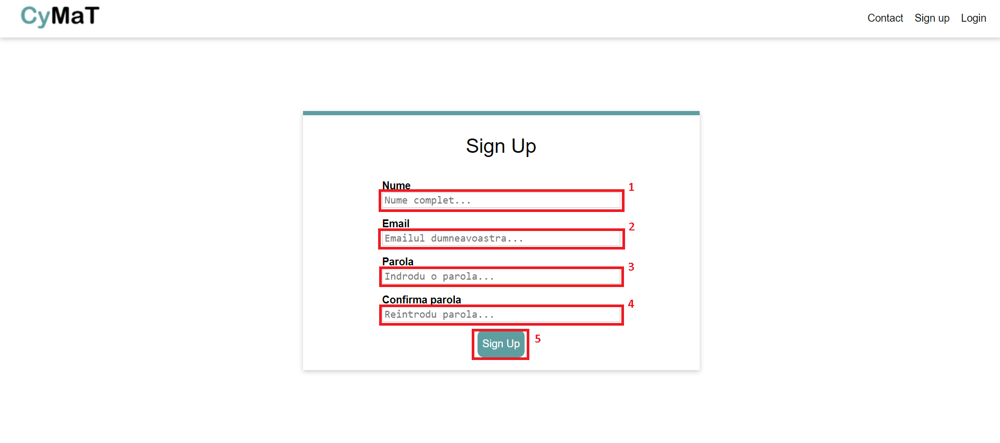Pași pentru crearea contului:
1. Introdu numele;
2. Introdu e-mail-ul;
3. Introdu parola;
4. Confirmă parola;
5. Apasă butonul de "Sign Up" pentru a crea astfel contul.
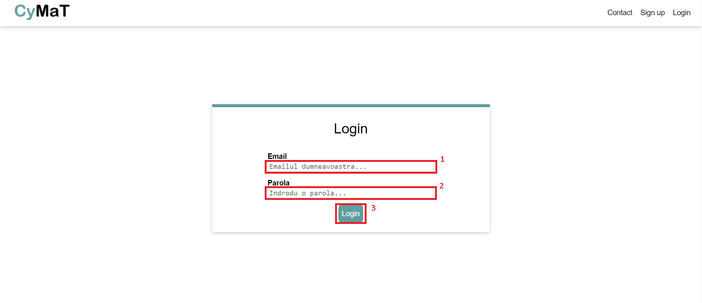
Pași pentru autentificare:
1. Introdu e-mail-ul;
2. Introdu parola;
3. Apasă butonul de "Login" pentru a te autentifica.
1.2 Realizarea unei programări și descrierea problemei de către client
Clientul service-ului va putea completa un formular în care trebuie să aleagă o zi dintre cele disponibile și va trebui să completeze spațiul special alocat descrierii problemei ce urmează a fi evaluată de către administrator. Cererea lui va fi fie acceptată, fie refuzată după evaluare. Răspunsul va fi afișat după formular.
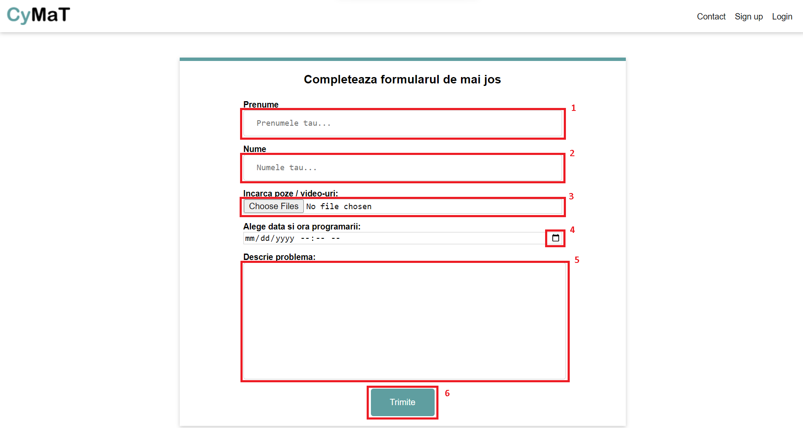Pași pentru trimiterea formularului:
1. Introdu prenumele;
2. Introdu numele;
3. Încarcă poza;
4. Fă o programare;
5. Descrie problema;
6. Apasă butonul de "Trimite" pentru a trimite formularul către echipa CyMat.
1.3 Contact
Clienții vor putea lua legătura cu administratorul sitului pentru orice eventuale probleme sau întrebări.
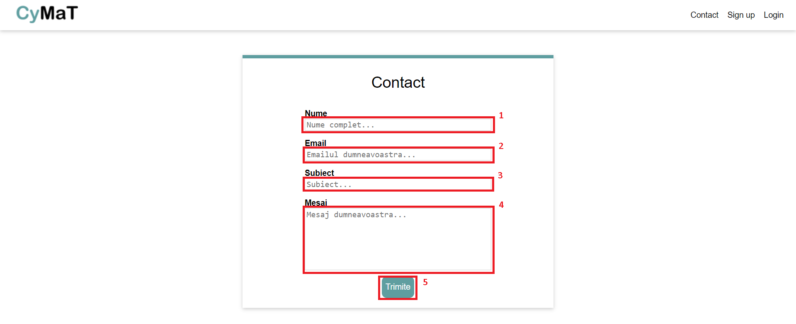Pași pentru trimiterea unei/unor întrebări:
1. Introdu numele;
2. Introdu e-mail-ul;
3. Introdu subiectul mesajului;
4. Introdu mesajul;
5. Apasă butonul de "Trimite" pentru a trimite mesajul către echipa CyMat.
2. Administrator
2.1 Administrator - Cereri
Persoana responsabilă de evaluarea cererilor trimise de către clienți va putea accesa secțiunea "Cereri" din cadrul sitului, după autentificare, unde are posibilitatea de a trimite un mesaj de răspuns și prețul aferent serviciilor prestate. Acesta va trebui să accepte sau refuze (în funcție de situație) o cerere pentru a putea fi trimis mesajul către client.

Pași pentru trimiterea unui răspuns către client:
1. Introdu răspunsul;
2. Introdu prețul;
Dacă accepți cererea clientului, atunci:
3. Apasă butonul de "Accepta".
Dacă refuzi cererea clientului, atunci:
4. Apasă butonul de "Refuza".

Administratorul mai are opțiunea de a vedea poza trimisă ca atașament în formular de către client. Pentru a vizualiza atașamentul:
1. Apasă butonul de "Atasament".
2.2 Administrator - Stocuri
În această secțiune administratorul va putea adăuga un produs nou după completarea formularului sau va putea actualiza prețul/stocul produselor deja existente.
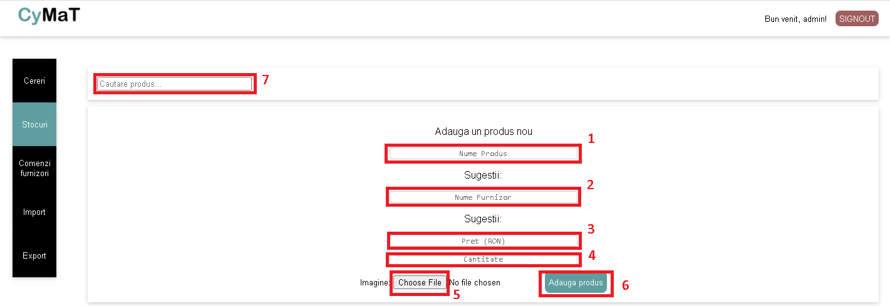Pași pentru adăugarea unui nou produs:
1. Introdu numele produsului;
2. Introdu numele furnizorului;
3. Introdu prețul;
4. Introdu cantitatea;
5. Încarcă o imagine;
6. Apasă butonul de "Adauga produs" pentru a adăuga un nou produs.
Dacă vrei să cauți un anumit produs în toată lista, atunci:
7. Apasă pe câmpul de "Cautare produs..." și introdu numele produsului pe care îl cauți.
Când ai găsit produsul pe care îl căutai, apasă pe el și te va duce direct la stocul acestuia.
Pentru a actualiza prețul/stocul produselor deja existente, urmează acești pași:
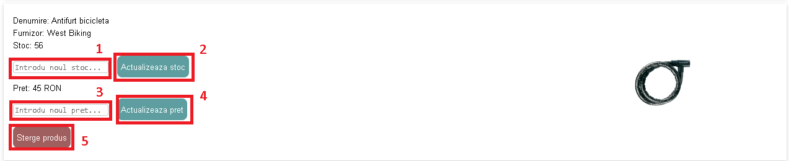1. Introdu noua cantitate;
2. Apasă butonul de "Actualizeaza stoc" pentru a adăuga o nouă cantitate;
3. Introdu noul preț;
4. Apasă butonul de "Actualizeaza pret" pentru a adăuga un nou preț;
Dacă vrei să ștergi un produs, atunci:
5. Apasă butonul de "Sterge produs".
2.3 Administrator - Comenzi furnizor
Aici vor putea fi vizualizate informații legate de comenzile plasate către un anumit furnizor, cum ar fi: estimat de livrare, preț, cantitate comandată etc.. De altfel, vor putea fi plasate și comenzi noi către un furnizor.
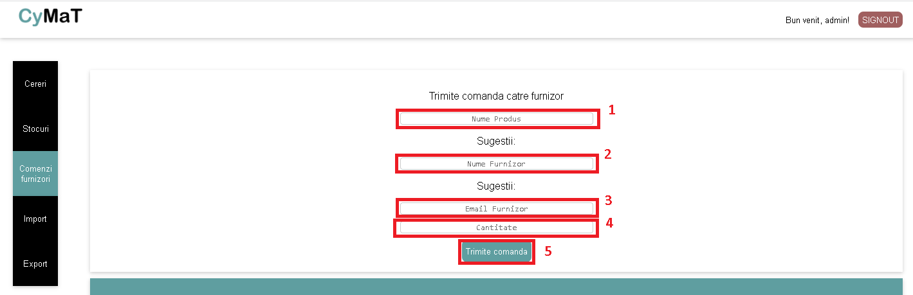Pași pentru trimiterea unei comenzi unui furnizor:
1. Introdu numele produsului;
2. Introdu numele furnizorului;
3. Introdu e-mail-ul furnizorului;
4. Introdu cantitea produsului;
5. Apasă butonul de "Trimite comanda" pentru a trimite comanda către furnizor.
Pentru fiecare comandă trimisă, există opțiunea de a o șterge:
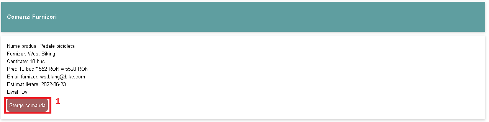1. Apasă butonul de "Sterge comanda" pentru a putea șterge comanda respectivă.
2.4 Administrator - Import
Administratorul va avea posibilitatea importării de fișiere .csv/.json în care pot exista mai multe produse/comenzi către furnizori ce vor fi încărcate automat în cadrul sitului, astfel evitând plasarea lor manual, rând pe rând.
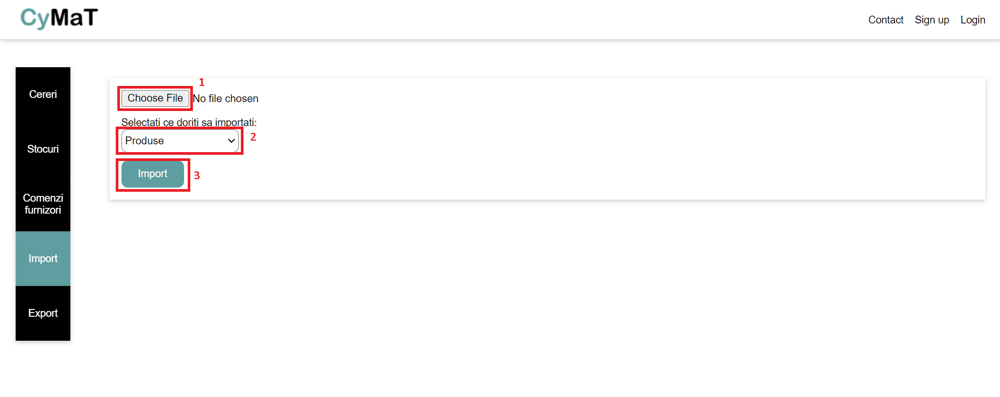Pași pentru importare:
1. Încarcă poza;
2. Alege dacă vrei să imporți lista cu produse sau lista cu comenzile către furnizori din meniul dropdown;
3. Apasă butonul de "Import" pentru a importa lista.
2.5 Administrator - Export
În cadrul acestei secțiuni administratorul va putea exporta în format .csv/.json/.pdf produsele existente pe site sau comenzile către furnizori, având posibilitatea de modificare și reîncărcarea ulterioară pe sit, folosind secțiunea import.
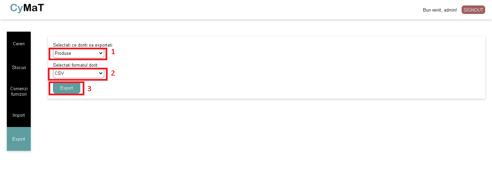Pași pentru exportare:
1. Alege dacă vrei să imporți lista cu produse sau lista cu comenzile către furnizori din meniul dropdown;
2. Alege formatul fișierului pe care îl dorești din meniul dropdown;
3. Apasă butonul de "Export" pentru a importa lista.
Atât administratorul, cât și clientul au opțiunea de a se deconecta:
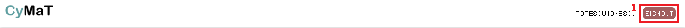1. Apasă pe butonul de "SIGNOUT."